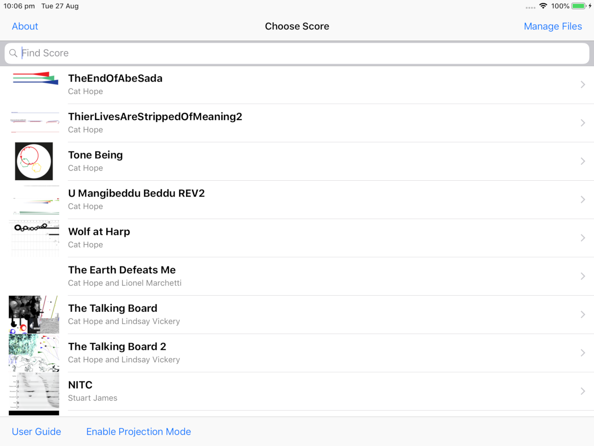
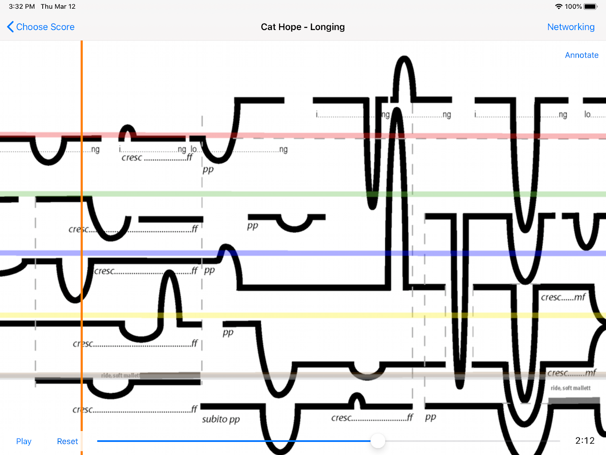
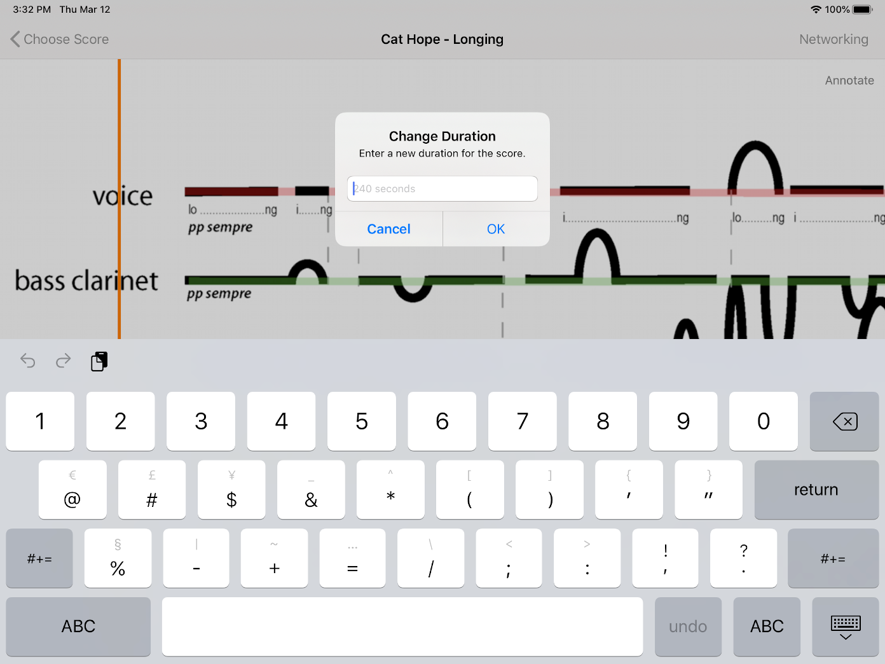
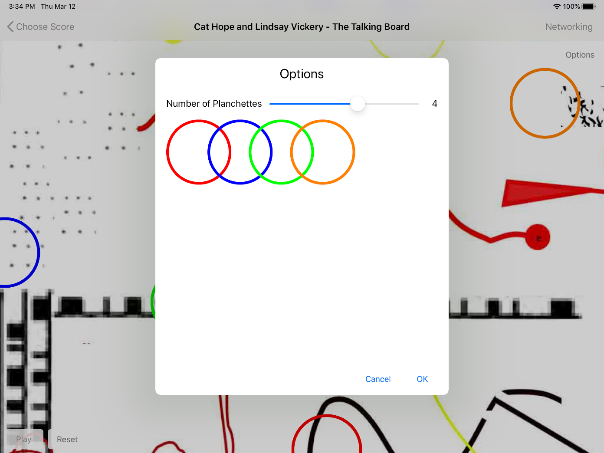
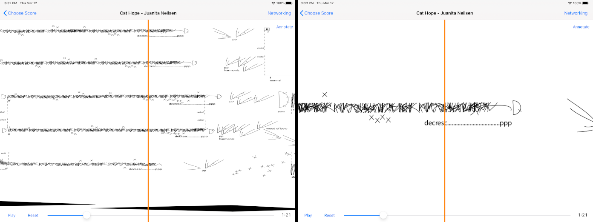
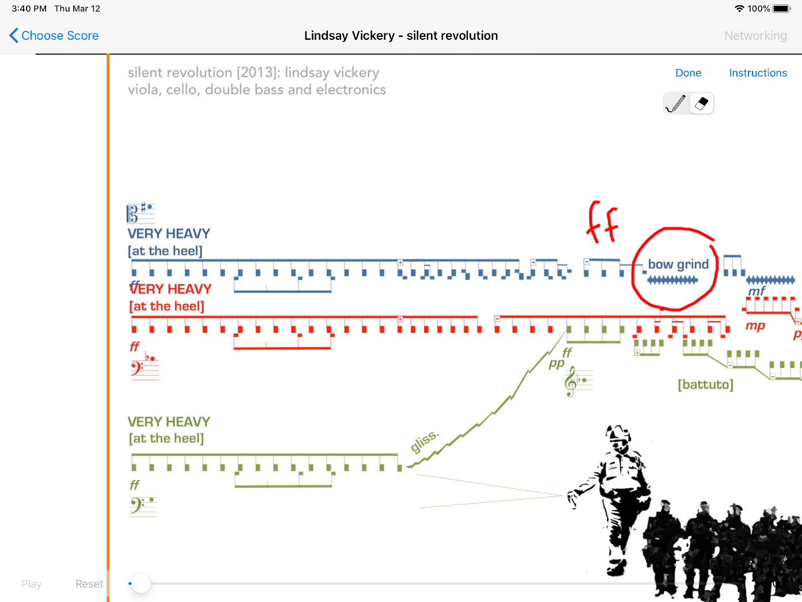
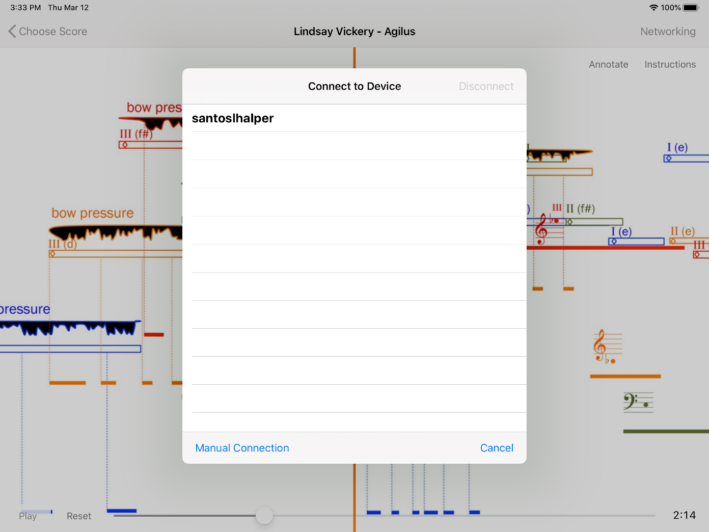
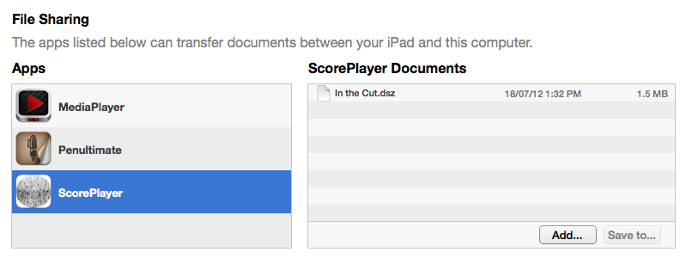
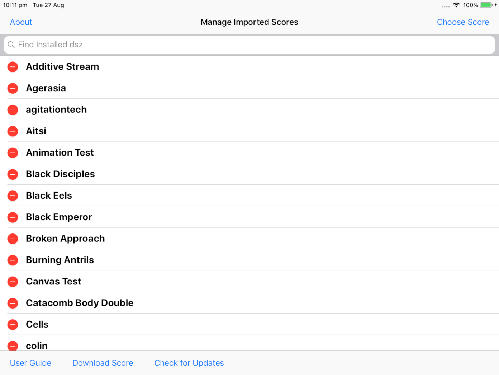
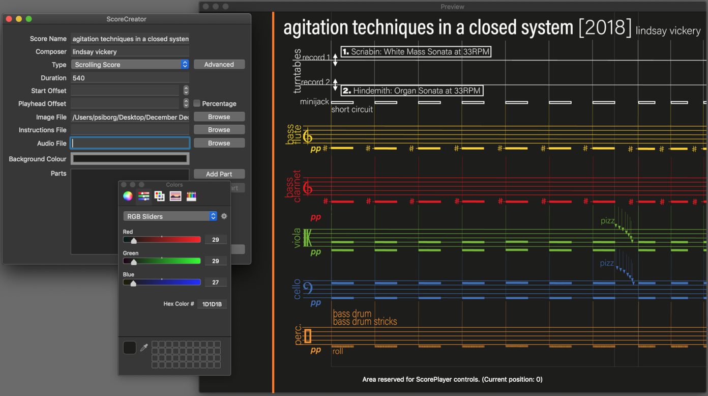

This is a quick guide to how the Decibel ScorePlayer works. Scroll down to browse or select from the topics below:
Using the Player
Networking
Managing Scores
Creating Scores
Troubleshooting
When first loading the player you’ll be presented with the score selection screen. This shows any scores that have been installed on the device, alongside the ones that come bundled with the app. Each entry has a little preview of what the score looks like, and is sorted by composer name (surname first) then title. If you have a lot of scores installed, the search bar at the top should make finding what you’re after easier. Even just entering the first few letters of a title or composer can really narrow the list down. The score selection screen is also the place where you can gain access to the file management screen (via the button in the top right corner) and where you can enable projection mode. In this mode, the player shows none of the usual onscreen controls, providing a very clean look if you want to project a score for the audience. The only drawback is that you’ll need to control playback from another networked iPad or external device. You can also hide the navigation bar while a score is loaded in projection mode by tapping on it. This hides all of the remaining user interface elements, leaving only the score.
The opening screen of the ScorePlayer, showing a selection of additional scores that have been installed.
After choosing the desired score from the selection screen you will be presented with the player view. This can be seen in the image below, and in this particular example it is displaying the most basic type of score, known as a scrolling score. This consists of an image that is interpreted by the musicians as it moves past a playhead. (The vertical orange line that can be seen to the left of the screen.)
The ScorePlayer displaying Longing, by Cat Hope. Each member of the ensemble reads one of the lines as it moves past the vertical, orange playhead.
As can be seen above, the player has a number of controls which are displayed based on the type of score chosen. (Some scores, for instance, are randomly generated with each new performance, so seeking through them doesn’t make a huge amount of sense.) The reset button resets the score, stopping playback and moving it back to the start of the work. The play button starts playback from the current location, while the location slider allows the user to seek through the score. For some types of scores, the play button also serves as a pause button once the score is set in motion, allowing you to stop and then continue playback at any location. If multiple iPads are networked together, all of these actions are synchronised across the network, and the score can be controlled from any of the connected iPads.
Additionally, some scores allow for the duration of their playback to be changed. This is accomplished by tapping on the clock in the bottom right hand corner and entering a new duration in the displayed dialogue box. This must be done while the score is stopped: if you tap on the clock while the score is playing or paused, it will hide the timer and location slider. Tapping the area where the clock was will make these reappear. In scrolling scores, you can also hide the playhead by tapping on it. (Useful if you want to project the score, but don’t want the audience following exactly what’s happening.) Tapping anywhere on the score will show it again.
Changing the duration of a score.
Some scores also contain instructions on how to interpret them, or allow performers to set options that affect their playback. For these scores, an options or instructions button (or both) will appear in the top right hand corner of the score while the score is stopped.
Talking Board, by Cat Hope and Lindsay Vickery, with its options window displayed. This allows the performers to set the size of the ensemble.
Scores may also contain individual parts, which allow performers to see a larger and potentially more detailed version of their part, rather than the whole score. Where a score includes this feature, the individual parts can be cycled through by swiping up or down on the screen.
Juanita Neilsen, by Cat Hope. To the left is the full score that appears when the score loads, followed by the first viola part.
From version 2.0, you now have the ability to write notes on certain types of scores, including the standard scrolling scores. The annotate button will appear in the top right corner of the player window when this feature is available. At the moment, you can mark up the score in red and use the eraser tool to remove any previous notes that you’ve made. It’s also best to choose a single orientation for the iPad for each score before making any notes: continually changing the orientation will lead to a deterioration in sharpness of your markings due to repeated scaling of the saved image. And while your markings will always map to exactly the same point on scrolling scores regardless of orientation, the same is not always true for other types of scores.
Silent Revolution, by Lindsay Vickery. The player is in annotation mode and controls to switch between drawing and erasing are displayed in the top right corner. The circle and ‘ff’ marking have been drawn onto the score.
Finally, the networking button on the navigation toolbar allows you to connect multiple iPads together, and to then monitor which devices are currently connected to one another over the network. (This allows you to quickly and easily troubleshoot any networking issues by seeing if any devices that should be present are missing.)
To connect together multiple iPads, you first need to ensure that they are running the same score, and ideally the same version of the score player. (Although the app should correctly detect whether two incompatible versions of the ScorePlayer are being used.) Tapping on the networking button in the top right hand corner of the screen will then bring up the following view.
The networking view showing other available iPads that are running the same score.
This displays all of the iPads on the network that you are able to connect to. (If you don’t see a device that you are expecting to see, first check the system settings to make sure you are connected to the same wireless network.) Selecting one of the listed iPads will connect to it, and will make it the server. All additional iPads that you want to sync up should then be connected to this same device. The next time the network button is pressed, it will display a list of the currently networked iPads, as well as giving the user the option to disconnect from the network. From here, you can also change which score is being displayed on all of the connected iPads. (This is limited to scores that are already installed on all of the devices.)
The list of connected iPads also shows which device is the current server by displaying (Server) after its name. It also shows if one of the devices has been automatically chosen as a backup server with the label (Secondary). If the main server leaves the network, the secondary server will take over seamlessly, and additional iPads should connect to this device instead.
As well as being able to automatically find any devices running the same score on the local network, the ScorePlayer also allows you the option to manually enter an IP address so that you can connect devices across larger networks, like the internet.
The easiest way to install a score to the app is via AirDrop. Make sure that this is enabled on your device and then simply use the share button in the Finder on OS X to transfer the file. (Score files have an extension of .dsz) Once you accept the file on your iPad it’ll be loaded into the ScorePlayer and available for use. Alternatively you can transfer scores via iTunes File Sharing, which can be found under the Apps tab for your device. The file will then be imported the next time the ScorePlayer app is run, and will no longer appear in the documents list. There is currently no way to export a score from the iPad to a computer, so it’s a good idea to keep a backup copy of any scores that you transfer across.
The File Sharing section of iTunes, showing a score ready to be imported by the player.
To delete any of the added scores, tap the manage files button on the score selection screen. This displays the list of currently imported score files and allows for their deletion. Please be aware that score files can contain multiple works, and all of the scores associated with the selected file will be deleted. You can see which scores are contained in a given file by tapping on it.
The file management screen allows for the deletion of any imported score files.
You can also download scores directly into the ScorePlayer using the Download Scores button. This opens a window that allows you to either type in a URL directly or enter one by scanning a supplied QR code. Some scores also have a link to an update server embedded in them, and you can check if there’s a newer version of one of these scores available by using the Check for Updates screen.
A companion OS X app is also under development to enable composers to create and upload their own works to the player. It currently allows for the creation of scrolling graphic scores and talking board style scores, and includes a help file to better explain the process. The most recent version of the app can be downloaded from Decibel’s web site at http://www.decibelnewmusic.com/decibel-scoreplayer.html.
The ScoreCreator app for OS X can be used to create score files for the player.
For those who want to play with the capabilites of the ScorePlayer further, including connecting to it with other applications like Max or Pure Data, the ScorePlayer Devolper Hub is a good starting point. This can be found at http://www.psi-borg.org/.
The most common issue faced is ensuring that all of the iPads are networked together as expected. If a device cannot find others over the network, first make sure that all of the devices are on the same wireless network. The iPads use the Bonjour protocol to find one another, and some networks may block this traffic, so if you’re trying to use a network that you don’t have full control over this may also cause problems. Additionally, while ad-hoc networks can be used, it is highly recommended that you use a dedicated access point for the best reliability during an actual performance.